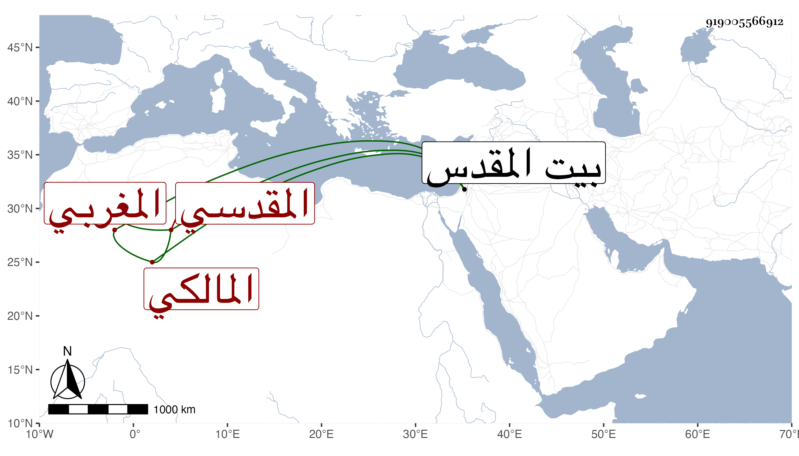

0902Sakhawi.DawLamic.ITO20230111-ara1.EIS1600.919005566912
Biography ID: 919005566912
أحمد بن سليمان بن أحمد بن عمر بن عبد الرحمن بن عوجان الشهاب المغربي الأصل المقدسي المالكي ويعرف بابن عوجان بمهملة ثم واو ثم جيم مفتوحات والد محمد وفاطمة . ولد في سنة ثلاث وستين وسبعمائة وولي قضاء المالكية بالقدس في سنة خمس وثمانمائة فكان ثاني مالكي بها وعزل غير مرة ثم يعاد ولم تحمد سيرته في القضاء لبذله ثم ارتشائه مع أنه كان عالما فقيها فاضلا يفتي ويدرس ويعرف صناعة القضاء حتى كان في كتابة الشروط وإتقانه لها ومعرفة الخلاف فيها بمكان ، قال الشمس الهروي كان يكتب مائة سطر ما يحكم عليه في سطر . مات في جمادى الأولى سنة ثمان وثلاثين ورآه البرهان بن غانم في النوم بعد موته بقليل فسأله عن حاله فحلف له بالطلاق أن الله قد غفر له ، واستقر عوضه في قضاء المالكية ابنه . ذكره ابن أبي عذيبة مطولا وقال أن الشهاب أخبره أنه حج مرة فنام في الحرم المدني فرأى النبي صلى الله عليه وسلم جالسا داخل الحجرة وأنه رام الدخول مع من يدخل فمنع فصار يترقق لمن يمنعه ويبالغ فقال له صلى الله عليه وسلم أدخل على ما فيك من دبر فكان يحكيها وهو بكي قال وإن النبي صلى الله عليه وسلم قال له لما دخل عليه سلم على غفير إيلياء إذا رجعت إليها فقال ومن هو يا رسول الله فقال خليفة ، وقال ابن أبي عذيبة أن والده سليمان مات في سنة سبع وثمانمائة عن تسعين بتقديم التاء فأزيد وكان مرقيا للخطباء وجابي الصدقات الحكمية وبلغنا من الثقات أنه كان سيء العقيدة يعتقد أن الشمس فعالة وأنها تستحق العبودية .
